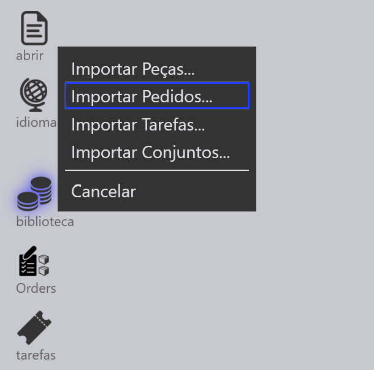
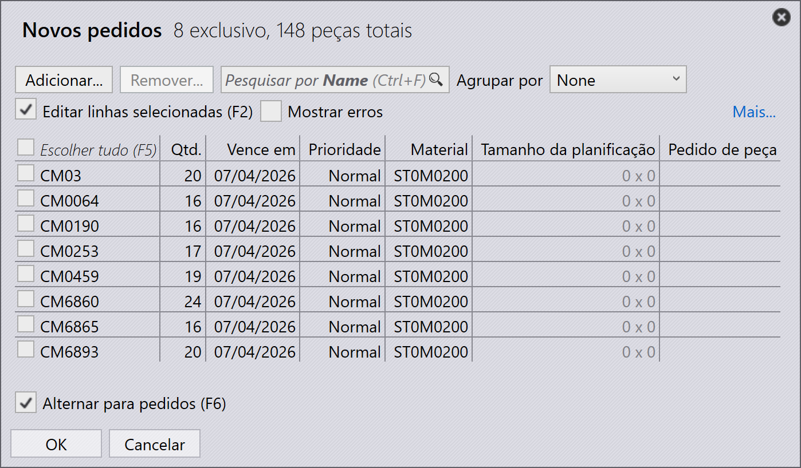
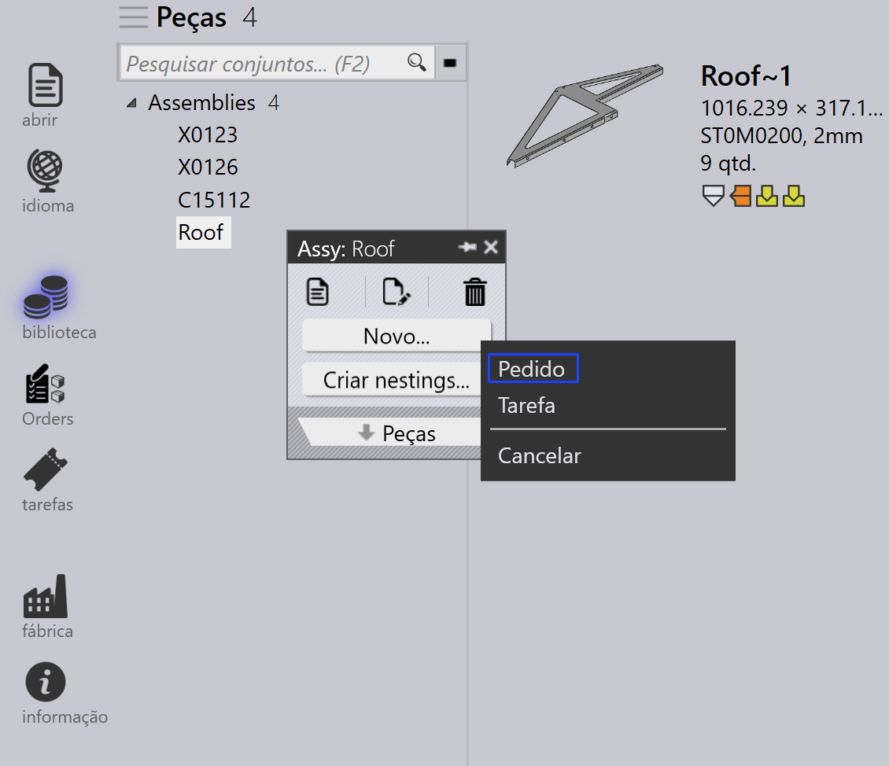
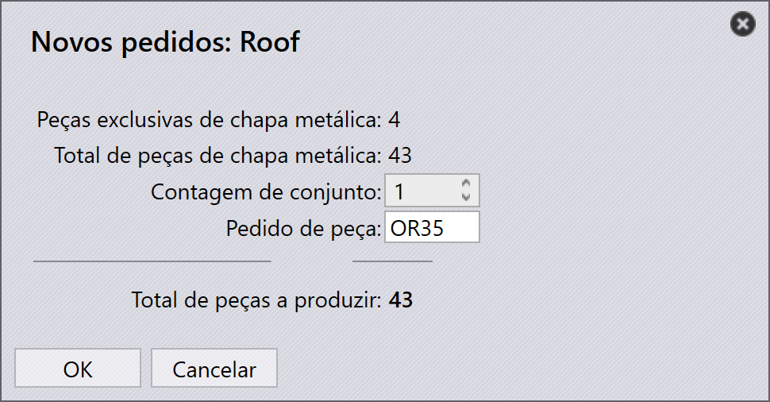

Importar pedidos
Pedidos podem ser criados ou importados usando os seguintes métodos:
-
Importar pedidos de arquivos de planilha.
-
Importar pedidos automaticamente através das configurações de monitoramento.
-
Criar pedidos a partir de peças existentes na biblioteca de peças.
-
Criar pedidos a partir de nestings estáticos de montagem.
Importar pedidos de planilha
-
Navegue até abrir → Importar _Pedidos….

-
Os formatos de planilha suportados incluem CSV, XLSX e XML.
-
Selecione o arquivo de planilha desejado e clique em abrir.
-
O processo de importação é semelhante ao fluxo de trabalho de importação de Tarefa/Montagem.

| Você também pode arrastar e soltar a planilha diretamente na página Orders para importar pedidos. |
Importar pedidos usando configurações de monitoramento
-
Habilite a opção Importar planilha da "Pasta ao vivo" em Configurações de monitoramento.
-
Selecione Importar pedidos em Opção de importação de planilha.
-
Configure o local da pasta de onde os pedidos devem ser importados.
-
O sistema monitora continuamente a pasta configurada.
-
Arquivos de planilha recém-adicionados são automaticamente importados para Orders.

| Para etapas de configuração detalhadas, consulte a documentação de Watch settings. |
Criar pedidos a partir da biblioteca de peças
-
Selecione as peças desejadas na Biblioteca de Peças.
-
Clique com o botão direito e escolha Novo… → Pedido para abrir o diálogo Novos pedidos.

-
Insira os detalhes necessários como quantidade, data de entrega e prioridade.

-
Clique em OK para criar os pedidos.
-
O sistema alterna automaticamente para a página Orders.
-
Os pedidos criados são exibidos na página Orders Ready para criação de tarefa.
Criar pedidos a partir de montagem
-
Clique com o botão direito na montagem desejada.
-
Selecione Novo… → Pedido para abrir o diálogo Novos pedidos.

-
Insira a Contagem de conjunto necessária.

-
Clique em OK para criar os pedidos.